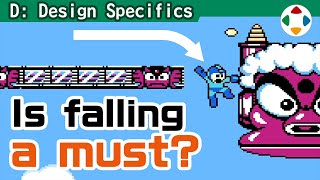
速览
在操作较多的游戏里，角色可以从悬崖掉下去，但规格多种多样，也有好坏之分。①无条件从崖边掉落：以前很多游戏是这样，但常常不太好，要判断这样是否真的可以。②移动中会掉，动作中不掉：动作带来的小幅前进如果每次都会掉下去，就像操作被取消了一样，多半不好；比如攻击时的踏步不让人掉下崖。③动作中也区分会掉和不会掉的：这相当正统，例如前方回避不掉、突进攻击会掉；还要注意速度继承，否则可能突然高速飞出去。《大乱斗》里，狐狸的 Fox Illusion 会停在崖边；Falcon Kick 会冲出崖外，但到最后阶段就不会掉；在崖边用很冒险的 Drill Rush，最后阶段能停住；耀西的「蛋滚滚」等会通过参数控制起跳时的速度。在 3D 游戏中，「用力推摇杆才会掉」、行进方向与崖边夹角很浅时补正方向以免掉落等规格也很有效。还有作品会在崖边自动跳跃。以为「掉下去理所当然」的崖边，光这些就能想出这么多。制作者不要放过试玩中的违和感，追求合适的规格。
1. 无条件掉落 0:03
在操作较多的游戏里，角色能从悬崖掉下去，但规格各种各样，当然也有好有坏。
首先是最单纯的：无论什么情况都会从崖边掉下去。
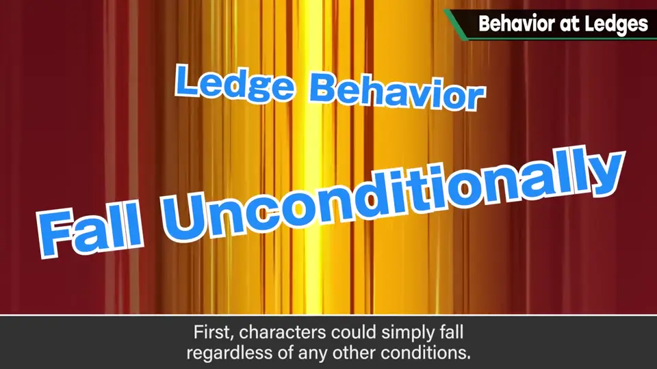
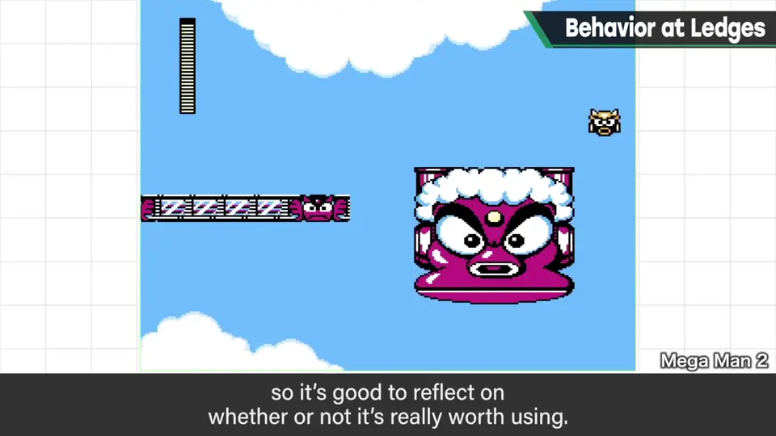
以前的很多游戏都是这样，但往往不太好，所以最好认真判断这样做是否合适。
2. 移动掉、动作不掉 0:34
下一种：移动中会掉，做动作时不会掉。
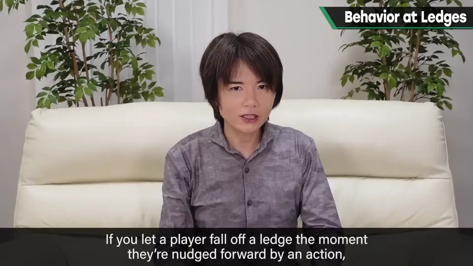
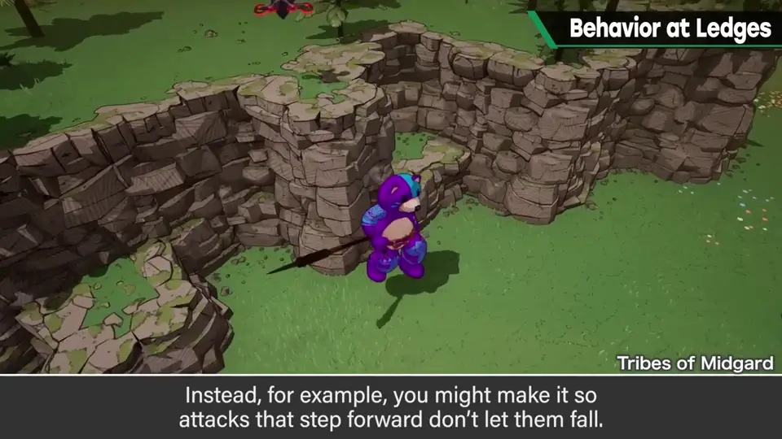
如果动作带来的一点点前进都会让角色掉下崖，就好像动作被取消了一样，多数情况下不好。例如让攻击时的踏步不会从崖边掉下去。
3. 按动作决定掉不掉 0:52
再下一种：动作中也规定哪些会掉、哪些不会掉。樱井说这相当正统，例如前方回避不会掉，而突进攻击会掉。
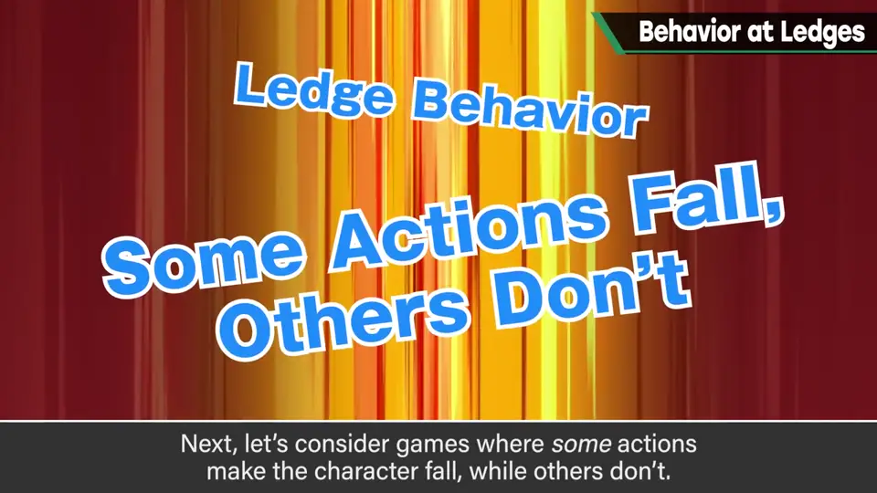
《大乱斗》里：狐狸的 Fox Illusion 会在崖边停住；Falcon Kick 会冲出崖外，但到招式最后阶段就不会掉下去；在崖边使用很冒险的 Drill Rush，最后阶段能停住；耀西的「蛋滚滚」等，则用参数设定起跳时的速度来控制。
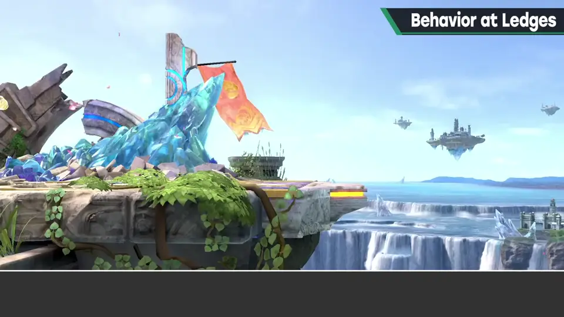
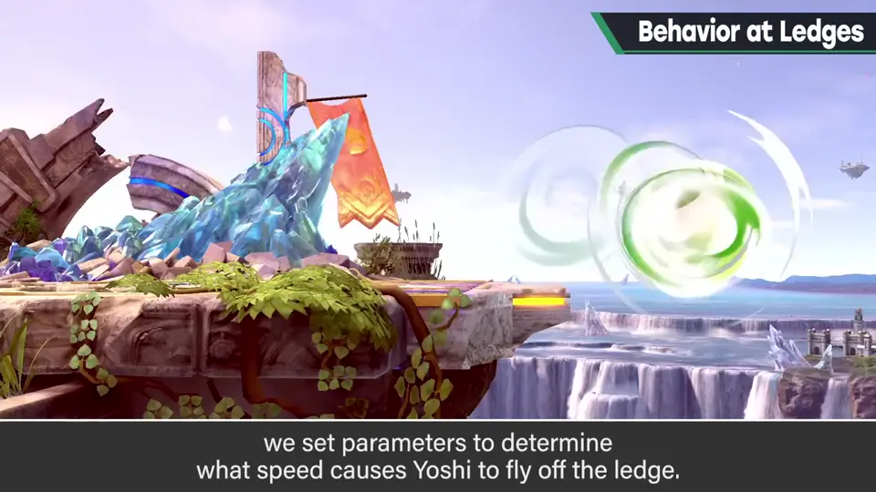
4. 3D 游戏的崖边 1:44
回到崖边行为：在 3D 游戏里，「用力推摇杆才会掉」，或者行进方向与崖边夹角很浅时进行补正、让角色不掉下去，这类规格也很有效。
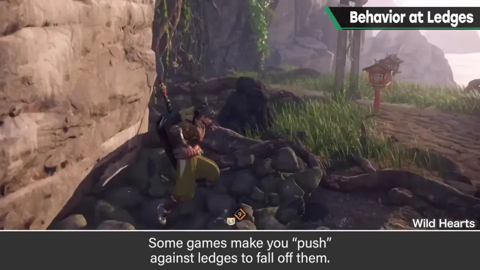
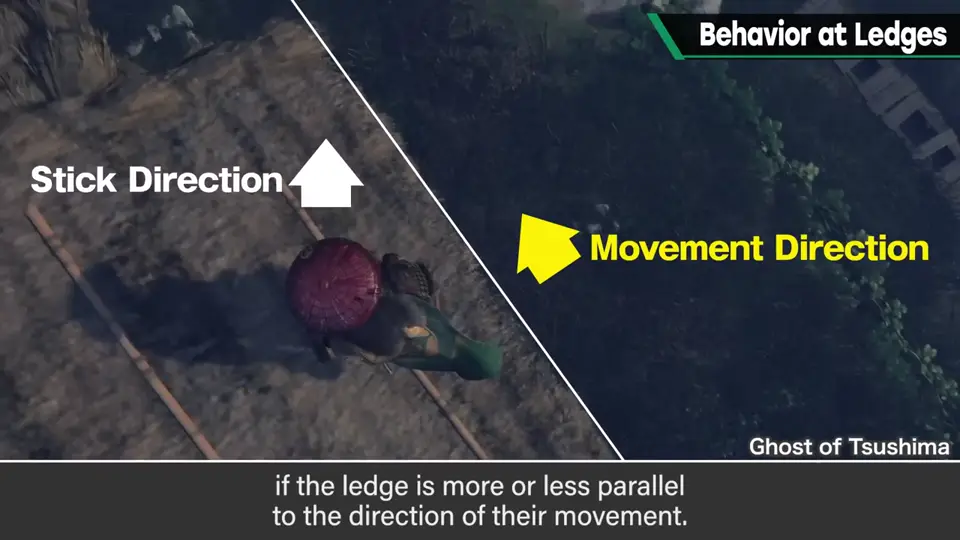
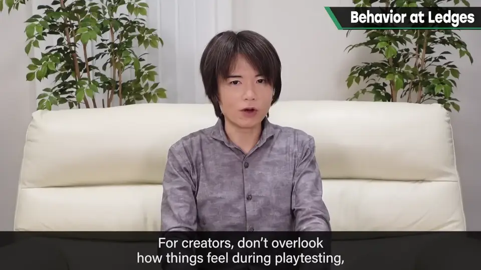
还有作品会在崖边自动跳跃，比如《塞尔达传说 时之笛》。
自测题
1. 为什么攻击时的小踏步最好不要让角色掉下崖？
每次小前进都掉下去，会像动作被取消一样，体验不好。 0:34
2. 「按动作区分掉不掉」时还要注意什么？
速度的继承，否则可能突然以高速冲出崖外。 1:04
3. 3D 游戏中有哪些有效的崖边规格？
用力推摇杆才掉、方向夹角浅时补正不让掉、自动跳跃等。 1:44